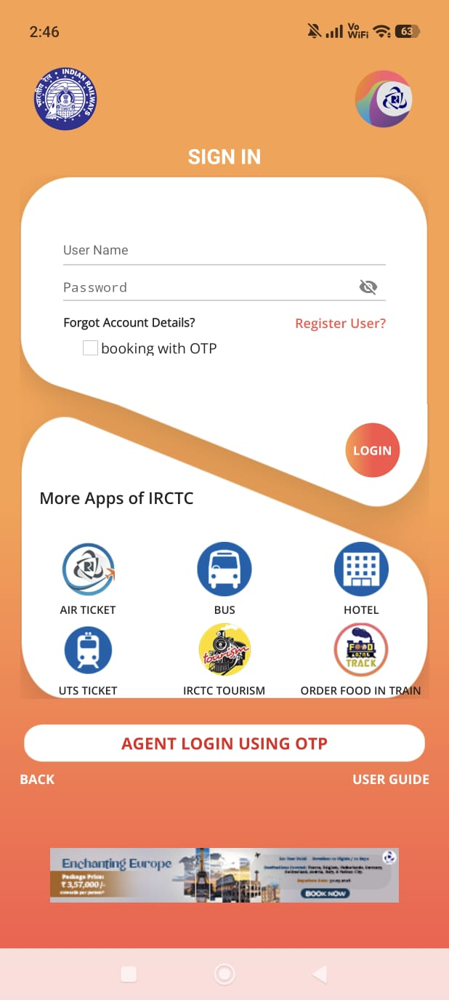
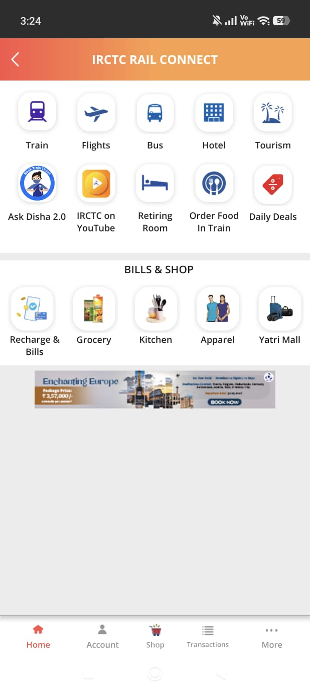
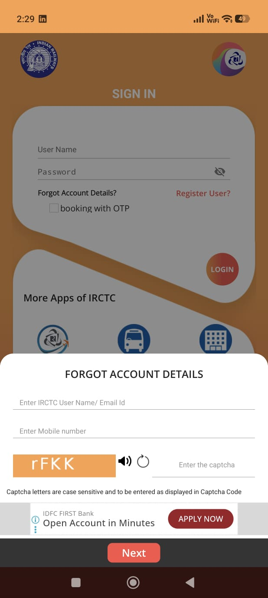
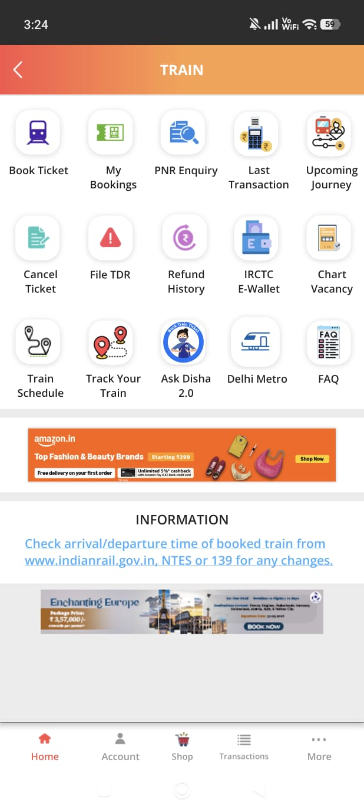
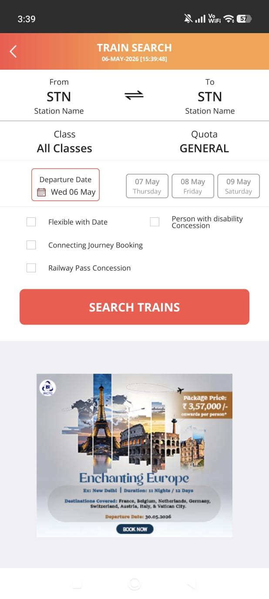
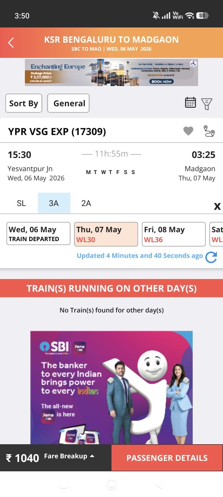
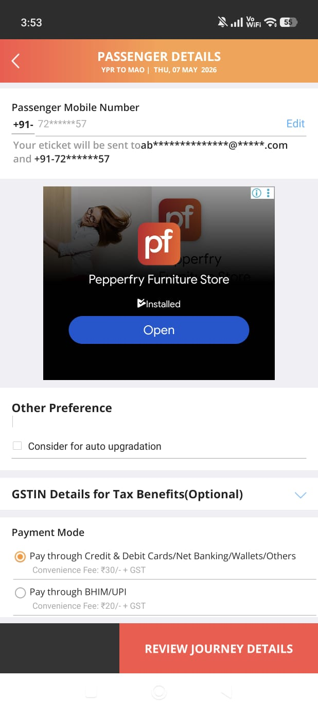
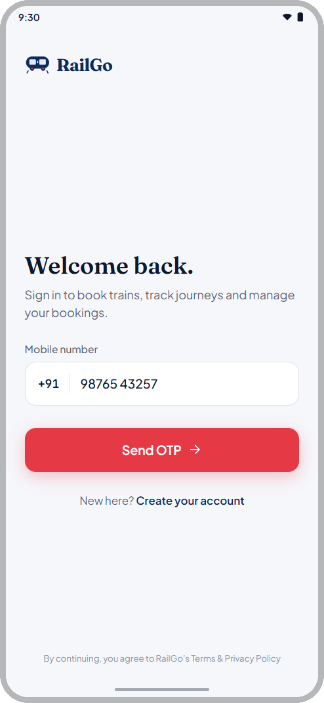
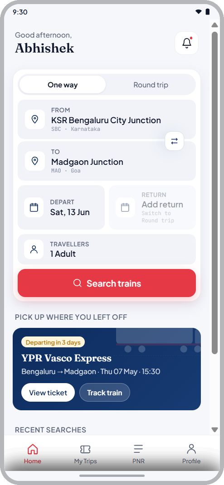
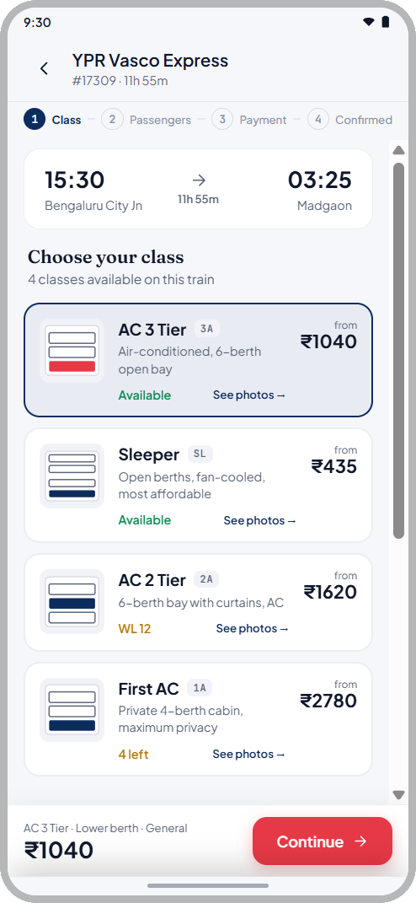

Finding 01Critical
Login CTA invisible against app icon
The circular red button matches the app icon, so the primary CTA reads as decoration.
Not prompted. Directed. The audit is proof. AI is the point, a force multiplier for faster research, sharper findings, and more intentional redesign.


Why IRCTC
The only official way to book Indian Railways tickets online.
The scale: millions of bookings every day. No alternative. No competition.
The stakes: missing a booking means missing travel.
The opportunity: every finding matters more when users have nowhere else to go.

Step 01 · The problem with UX audits
Senior designers spend the majority of audit time on low-level sorting, tagging violations, building severity matrices by hand. Strategic thinking gets whatever time is left.
The reframe
AI handles classification at velocity. The designer focuses entirely on synthesis, strategy, and design.
I didn't pick IRCTC because it was broken. I picked it because when millions of people have no alternative, getting the UX right is a responsibility.
Step 02 · The AI audit system
Custom prompt frameworks built on foundational usability principles. AI clustered the patterns, I architected the findings.
The six frameworks
Primary classifier, every observation mapped against all 10 heuristics instantly.
Interaction geometry. Violations flagged when the most-used action requires the most physical effort.
Friction classifier, screens exceeding working-memory thresholds identified at scale.
Convention detector, all departures from established mobile UI conventions flagged.
Salience mapping, screens where everything competes and nothing wins.
Accessibility. Contrast, touch targets, and legibility evaluated across the full flow.
Severity scale
Transaction blocks / search failures.
Navigation confusion / cognitive friction.
Visual hierarchy / label clarity.
Step 03 · Key findings
The circular red button matches the app icon, so the primary CTA reads as decoration.
A "SIGN UP" ad banner sits above the "Next" button during password recovery. Two CTAs when the user is already locked out.

Home → Train → Book Ticket → Search. Fitts's Law violated on India's most-used transport app.


Home → Train → Search, 3 taps
An SBI ad sits between class/availability and the booking CTA. Users scroll past a bank ad to see what they will pay.

A furniture ad interrupts the highest-stakes data-entry screen. UPI listed as secondary.

Systemic issues
Step 04 · Customer journey map
Launch. Outdated visual language triggers distrust before any interaction.
Login. Invisible CTA, cross-promo grid, ad at worst possible moment.
Finding booking. Identical icons, 3 taps minimum, no shortcut for primary task.
Train details. Ad physically covers the two most important elements.
Passenger form, full-screen ad at most critical data-entry moment.
IRCTC's worst friction hits users at exactly the stages where commitment is highest. The app is failing people who have already said yes.
Step 05 · Competitor analysis
MakeMyTrip and Cleartrip are leading Indian travel booking apps.
| IRCTC | MakeMyTrip | Cleartrip | |
|---|---|---|---|
| Primary action | 3 taps | Home screen | Home screen |
| Progress indicator | None | Throughout | Throughout |
| Ad placement | In flows | Passive only | Minimal |
| Visual hierarchy | None | Clear system | Clean |
| UPI prominence | Secondary | Primary | Primary |
What I took from them
From MakeMyTrip
Search-first home eliminates intermediate screens, primary task in one tap.
From Cleartrip
Progress visibility reduces anxiety. Users complete more when they know how close they are to done.
From both
Ads belong in passive browsing. Never inside login, booking, or payment.
Step 06 · The AI orchestration workflow
6 custom prompt frameworks, each trained on a specific usability principle.
8 screens classified in hours, clustered by framework, severity, and screen.
3 systemic issues AI cannot see. Patterns that require product strategy, not just screens.
Every screen planned before prompting. AI generated. I refined. Every decision mine.
The split
Step 07 · Redesign principles and before and after
Primary task on home screen. Zero intermediate screens for what 80% of users came to do.
Ads in passive moments only, never inside login, recovery, booking, or payment.
A 5-step flow needs a 5-step indicator. Users always know where they are.
One colour cannot mean everything. Clear visual hierarchy across actions, status, and decoration.
Before and after




RailGo redesign, prototype walkthrough
Step 08 · Impact
>50%Research time compressed vs manual audit
8Screens classified in hours not weeks
6Frameworks applied simultaneously
3Systemic issues identified beyond individual findings
What I learned
Frameworks are reusable on any product. Strategic synthesis remains entirely human.
Screen findings are fixable. Systemic patterns require a designer who sees the whole product.
Friction at commitment peaks is the finding that changes product strategy, not screen fixes.
Compressing weeks into hours without losing depth is a systems design problem. I solved it with prompt engineering.
The value I bring
A senior designer who can run a full heuristic audit, build the AI system to accelerate it, synthesise systemic insights, and design the solutions, in the time it takes most teams to finish the research phase.